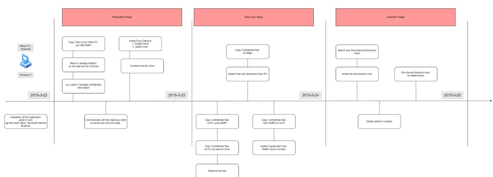

1. Case Introduction
The case involves a fictional company experiencing a suspected data breach. Investigators were tasked with analyzing a forensic disk image to detect unauthorized activity, trace the flow of sensitive data, and identify key individuals and actions responsible for the leak.
2. Tools Used
- Autopsy – GUI-based forensics suite used to examine disk image contents
- FTK Imager – Previewed image files and extracted artifacts
- Wireshark – Analyzed captured network traffic
- Volatility – Investigated RAM dumps for live activity
- Strings & grep – Scanned disk for embedded keywords and patterns
- File Signature Tools – Verified file integrity and hidden content
3. Key Evidence Found
- Computer and USB Activity: Logs indicated the insertion of external drives and file transfers during non-working hours.
- Email Trails: Extracted messages confirmed internal files being sent as attachments.
- Restored and Hidden Files: Confidential documents were stored in concealed directories and renamed.
- Network Logs: Wireshark revealed access to suspicious external servers.
- Volatile Memory: Passwords, user sessions, and open documents were recovered, pointing to intentional data exfiltration.
